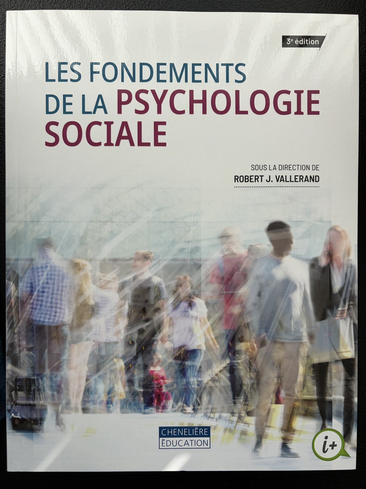

Psychologie sociale
Cours 1 — Voir le social autrement
UQAR — PSY1703-04
1 septembre 2026
Bienvenue à PSY1703
Aujourd’hui, nous allons commencer à regarder les comportements familiers avec un regard nouveau.
Qui suis-je?
- Professeur adjoint au Département des sciences de la santé
- Baccalauréat en psychologie, maîtrise en psychiatrie et doctorat en psychologie sociale
- Recherche postdoctorale sur les identités sociales à New York University
- Deuxième expérience d’enseignement; première prestation complète de PSY1703
Mon laboratoire à l’UQAR
Identités sociales · prosocialité · cognition implicite
- Comment nos identités transforment-elles nos relations avec les autres?
- Comment favoriser l’empathie, la coopération et le bien-être?
- Comment rendre la recherche plus ouverte, transparente et reproductible?
Ce cours cherche des explications
Au fil du trimestre, nous étudierons comment les personnes :
- se perçoivent et interprètent les autres;
- s’influencent mutuellement;
- développent des relations;
- agissent au sein de groupes et entre les groupes.
Le manuel nous servira de point d’ancrage

Les fondements de la psychologie sociale
3e édition, sous la direction de Robert J. Vallerand
- Disponible à la Coop de l’UQAR
- Lectures préparatoires liées aux quiz
- Définitions, recherches classiques et applications
Photographie : Rémi Thériault (2026) · Couverture : Chenelière Éducation
Ouvrons le plan de cours
Je vais maintenant partager le document officiel à l’écran.
Repérons ensemble :
- la façon de se préparer chaque semaine;
- les évaluations et leurs dates;
- les règles qui protègent l’équité du groupe;
- les ressources et les moyens de me joindre.
Les dates qui structurent le trimestre
| Évaluation | Date | Pondération |
|---|---|---|
| Examen 1 | 29 septembre | 25 % |
| Examen 2 | 10 novembre | 30 % |
| Examen 3 | 15 décembre | 35 % |
| Quiz de lecture | 15 septembre–8 décembre | 10 % |
Faisons connaissance
Quelques questions rapides sur :
- votre année et votre programme;
- vos projets professionnels;
- votre expérience de la recherche;
- ce qui vous aiderait à apprendre.
Il n’y a pas de « bonne » réponse : cela m’aide à mieux adapter le cours au groupe.
Notre première question
Pourquoi les gens font-ils ce qu’ils font?
Répondez dans Wooclap avec la première explication qui vous vient à l’esprit.
Qu’associez-vous à la psychologie sociale?
Nuage de mots Wooclap
Partie 1
La psychologie sociale étudie l’influence d’autrui
Elle cherche à comprendre comment nos pensées, nos émotions et nos comportements sont influencés par la présence réelle, imaginée ou implicite des autres.
La personne et la situation façonnent le comportement
\[C = f(P, S)\]
Comportement = fonction de la Personne et de la Situation
Une même personne peut agir différemment selon la situation — et deux personnes peuvent interpréter différemment la même situation.
Nous ne réagissons pas seulement aux faits
Nous réagissons aussi à la manière dont nous interprétons les faits.
Cette construction de la réalité sociale sera un fil conducteur du trimestre.
Une pause qui nous ressemble
Pendant la pause, vous pourrez proposer :
- une chanson appropriée au contexte de la classe;
- une photo de votre animal à afficher avec votre autorisation.
Retour à 14 h 30.
Envoyez vos suggestions à Remi_Theriault@uqar.ca
Objet suggéré : PSY1703 — pause
Une même image, plusieurs réalités
Que voyez-vous?

Votez individuellement dans Wooclap avant d’en discuter.
Quelles couleurs voyez-vous principalement?
Photographie : Cecilia Bleasdale (2015) · Source scientifique
Explorez votre interprétation
En groupe :
- Décrivez ce que vous voyez, sans chercher à convaincre.
- Imaginez pourquoi une même image produit plusieurs perceptions.
- Observez ce que la catégorie « Bleus » ou « Ors » change dans vos échanges.
Une perception différente peut être sincère
Le même stimulus peut soutenir des expériences perceptives différentes.
En contexte social, nos interprétations peuvent ensuite être renforcées par la discussion avec les personnes qui nous ressemblent.
Réussir son trimestre
Le Centre d’aide à la réussite
Services, gestion du temps, stratégies d’étude, prévention du plagiat et rédaction.
Partie 2
Une discipline construite autour de grandes questions
- Comment la présence d’autrui transforme-t-elle l’action?
- Comment formons-nous nos impressions et nos jugements?
- Pourquoi nous conformons-nous parfois au groupe?
- Comment les relations entre groupes deviennent-elles coopératives ou conflictuelles?
Trois influences ont marqué la discipline
Les rôles sociaux orientent les attentes.
Le renforcement modifie la probabilité d’un comportement.
La cognition organise notre interprétation du monde social.
La psychologie sociale agit dans de nombreux milieux
Santé · éducation · travail · justice · environnement · médias · politiques publiques
Ce que vous devriez retenir aujourd’hui
- Le comportement ne s’explique pas uniquement par la personnalité.
- La situation et son interprétation façonnent l’action.
- La psychologie sociale transforme ces questions en objets scientifiques.
Pour le 8 septembre
- Lecture : chapitre 2 sur les méthodes de recherche
- Noter une affirmation psychologique entendue cette semaine
- Se demander : comment pourrait-on la tester?
PSY1703 — Psychologie sociale · Automne 2026
Comment utiliser Wooclap
Vos réponses serviront à réfléchir ensemble, pas à vous mettre sur la sellette.